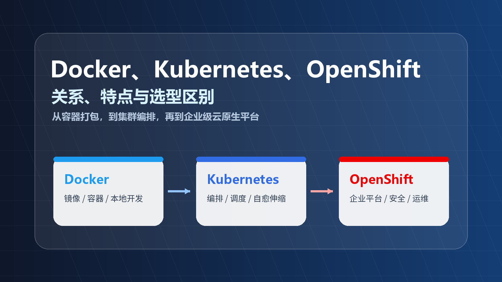
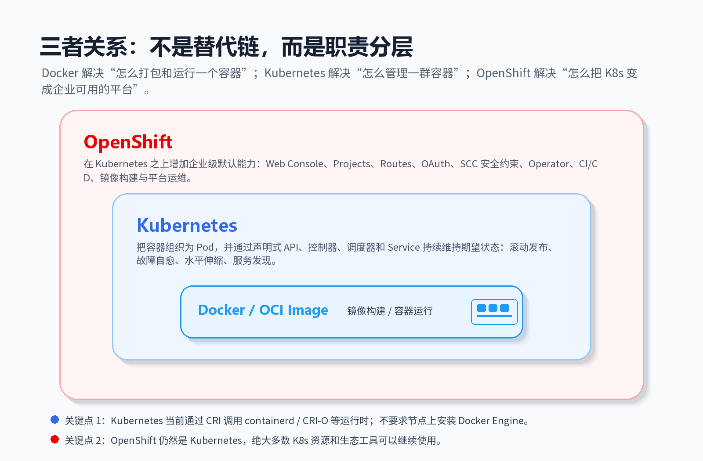

Docker、Kubernetes、OpenShift 的关系、特点与区别
很多人学习云原生时会先听到 Docker，然后听到 Kubernetes，最后又遇到 OpenShift。三者经常被放在一起讨论，但它们不是同一层面的工具：Docker 偏应用打包与容器运行，Kubernetes 偏集群编排，OpenShift 则是在 Kubernetes 之上做企业级平台化。

Docker、Kubernetes、OpenShift 的关系封面先给出一句话版本：
| 工具 | 一句话定位 | 主要解决的问题 |
|---|---|---|
| Docker | 容器工具链 | 如何把应用和依赖打成镜像，并在单机上稳定运行 |
| Kubernetes / K8s | 容器编排平台 | 如何在多台机器上调度、发布、扩缩容和自愈容器化应用 |
| OpenShift | 企业级 Kubernetes 平台 | 如何把 Kubernetes 变成适合多团队、合规、安全、运维和交付的平台 |
一、三者关系：不是替代链，而是职责分层
很多误解来自一句话：“Kubernetes 替代了 Docker。”这句话不严谨。
更准确的说法是：
- Docker 让开发者更容易构建镜像、运行容器、管理本地开发环境。
- Kubernetes 不关心你必须用 Docker 来构建镜像，它关心的是：集群里应该跑哪些 Pod、跑几个副本、挂什么配置、暴露什么服务、怎么滚动升级。
- OpenShift 基于 Kubernetes，并额外提供企业常用的平台能力，比如 Web 控制台、项目隔离、Route、构建流水线、Operator、安全策略、身份认证和平台运维工具。

Docker、Kubernetes、OpenShift 职责分层关系图这里有两个关键点：
- Kubernetes 不等于 Docker：Kubernetes 通过 CRI（Container Runtime Interface）对接容器运行时，常见运行时包括
containerd、CRI-O等。早期 Kubernetes 曾通过 dockershim 直接集成 Docker Engine，但 dockershim 已从 Kubernetes v1.24 起移除。 - OpenShift 不等于另一个 Kubernetes 替代品：OpenShift 仍然是 Kubernetes，底层 API、Pod、Deployment、Service、ConfigMap、Secret 等核心资源都来自 Kubernetes。它的价值在于把 Kubernetes 产品化、平台化、企业化。
如果用一个分层视角来看：
 从基础设施到 OpenShift 平台的能力分层
从基础设施到 OpenShift 平台的能力分层
二、Docker：把应用装进标准化容器
Docker 最核心的价值是把“应用如何运行”标准化。
传统部署里，一个应用能否跑起来，取决于目标机器是否安装了正确版本的 JDK、Python、Node.js、系统库、配置文件和环境变量。Docker 的思路是：把应用代码、运行时、系统依赖和启动命令一起打包成镜像，然后用这个镜像启动容器。
1. Docker 的核心概念
| 概念 | 作用 | 你可以怎么理解 |
|---|---|---|
| Dockerfile | 描述镜像如何构建 | 一份“环境装配说明书” |
| Image 镜像 | 只读模板，包含运行应用所需文件、依赖和配置 | 应用交付包 |
| Container 容器 | 镜像的运行实例 | 真正在跑的进程环境 |
| Registry 镜像仓库 | 存储和分发镜像 | 容器镜像的制品仓库 |
| Docker Compose | 用一个 YAML 文件定义多容器本地环境 | 本地开发环境编排工具 |
一个非常典型的 Dockerfile 可能长这样：
|
|
这个文件表达的是：
- 基于
node:22-alpine做基础环境； - 把项目文件复制进去；
- 安装依赖；
- 声明端口；
- 指定容器启动命令。
开发机、测试环境、生产环境只要运行同一个镜像，运行方式就能大幅一致。
2. Docker 的特点
Docker 的优势很明显：
- 环境一致：镜像包含运行所需依赖，减少“我电脑上可以跑”的问题。
- 交付标准化：镜像可以用 Tag、Digest、签名、扫描等方式纳入制品管理。
- 启动快、资源轻：容器共享宿主机内核，通常比虚拟机更轻量。
- 本地开发体验好：Docker Desktop、Docker CLI、Docker Compose 让本地起 MySQL、Redis、Nginx 等依赖非常方便。
- 生态成熟：Docker Hub 和各类镜像仓库提供大量现成基础镜像。
3. Docker 的边界
Docker 很适合解决“一个容器怎么构建、怎么运行”的问题，但它不是完整的生产集群平台。
当应用变成几十个服务、几百个容器、横跨多台服务器时，你还需要回答：
- 容器应该调度到哪台机器？
- 某台机器挂了，服务如何自动恢复？
- 如何让多个副本滚动升级？
- 如何做服务发现和负载均衡？
- 如何控制配置、密钥、存储、网络策略？
- 如何让平台维持“期望状态”？
这些就是 Kubernetes 的主场。
三、Kubernetes：让一群容器按期望状态运行
Kubernetes，常简称 K8s，是容器编排平台。它的核心不是“启动一个容器”，而是“让一组容器化应用在集群中长期稳定运行”。
Kubernetes 的关键思想是 声明式 API + 控制循环。
你告诉 Kubernetes：“我希望这个服务永远有 3 个副本，使用这个镜像，对外暴露 80 端口。”Kubernetes 会不断观察真实状态，如果发现只剩 2 个副本，就再拉起 1 个；如果某个节点不可用，就把工作负载调度到其他节点。
1. K8s 的核心对象
| 对象 | 作用 |
|---|---|
| Cluster | 一组运行 Kubernetes 的机器 |
| Node | 集群中的工作节点，可以是虚拟机或物理机 |
| Pod | Kubernetes 最小调度单元，内部可以包含一个或多个容器 |
| Deployment | 声明无状态应用的副本数、镜像版本和滚动更新策略 |
| Service | 为一组 Pod 提供稳定访问入口和服务发现 |
| Ingress | 管理 HTTP/HTTPS 入口流量 |
| ConfigMap | 管理非敏感配置 |
| Secret | 管理密码、Token、证书等敏感信息 |
| Namespace | 做资源隔离和命名空间划分 |
下面是一个最简 Deployment：
|
|
这段 YAML 的意思是：运行 3 个 web Pod，每个 Pod 里有一个容器，容器镜像是 registry.example.com/team/web:1.0.0。
2. K8s 的特点
Kubernetes 的核心能力包括：
- 调度：根据资源、亲和性、污点、拓扑等条件，把 Pod 放到合适节点。
- 自愈：容器退出、Pod 异常、节点不可用时，控制器会尝试恢复到期望状态。
- 水平扩缩容：通过 HPA 等机制按 CPU、内存或自定义指标扩缩副本。
- 滚动更新和回滚：逐批替换旧版本 Pod，降低发布风险。
- 服务发现：Service 为动态变化的 Pod 提供稳定访问入口。
- 配置和密钥管理：ConfigMap 和 Secret 让配置与镜像解耦。
- 生态开放：CNI、CSI、CRI、Ingress Controller、Service Mesh、Operator 等生态组件非常丰富。
3. K8s 的边界
Kubernetes 强大，但它不是“开箱即用的完整企业平台”。裸 Kubernetes 往往还需要你自己选型和集成：
- 镜像仓库和镜像扫描；
- CI/CD 或 GitOps；
- 统一登录和权限模型；
- 多租户项目管理；
- 监控、日志、告警；
- 应用入口网关和证书；
- 集群安装、升级、备份和运维；
- 安全基线、准入控制、网络策略。
这也是为什么很多企业会选择托管 Kubernetes 服务，或者选择 OpenShift 这类更完整的平台。
四、OpenShift：把 Kubernetes 做成企业级平台
OpenShift 是 Red Hat 的 Kubernetes 平台。它不是重新发明一套编排系统，而是在 Kubernetes 之上加入一组更“有默认答案”的企业级能力。
如果说 Kubernetes 是一套强大的“平台内核”，OpenShift 更像是把内核、控制台、权限、网络入口、构建、流水线、安全策略、Operator 和运维能力组合起来，交付给企业内部团队使用。
1. OpenShift 常见能力
| 能力 | Kubernetes 原生情况 | OpenShift 的平台化增强 |
|---|---|---|
| Web 控制台 | Kubernetes Dashboard 不是核心默认体验 | 提供面向开发者和管理员的 Console |
| 项目隔离 | Namespace 是基础对象 | Project 在 Namespace 基础上封装更贴近团队使用 |
| 应用入口 | Ingress 需要选择控制器 | Route 是 OpenShift 常用入口模型 |
| 身份认证 | 可扩展，但需要集成 | 通常集成 OAuth、LDAP、OIDC 等企业身份系统 |
| 安全约束 | PSA、RBAC、Admission 等能力分散 | SCC、安全默认值和平台策略更强 |
| 构建镜像 | K8s 本身不负责构建镜像 | 常见提供 Build、Source-to-Image、镜像流等能力 |
| Operator | Kubernetes 可使用 Operator | OpenShift 深度使用 Operator 管理平台组件 |
| 运维升级 | 需要自己设计流程 | 更强调安装、升级、生命周期和 Day-2 运维 |
说明：不同 OpenShift 版本、安装方式和启用组件会有差异，具体能力以实际发行版和官方文档为准。
2. OpenShift 的特点
OpenShift 的典型优势是：
- 更完整的开箱体验：控制台、登录、项目、路由、构建、平台组件管理更统一。
- 默认安全更严格：对容器权限、用户、镜像运行方式通常更保守，更适合企业治理。
- 面向多团队协作：Project、RBAC、配额、模板、Operator 等能力更适合平台团队给业务团队供给环境。
- 企业支持和生命周期管理：Red Hat 生态、支持服务、升级路径和认证矩阵对企业很重要。
- 混合云与私有化场景友好：很多企业需要在本地数据中心、私有云、公有云之间保持一致的平台能力。
3. OpenShift 的代价
OpenShift 的代价也要说清楚：
- 学习曲线更高：除了 Kubernetes 概念，还要理解 Route、Project、SCC、BuildConfig、ImageStream 等 OpenShift 组件。
- 平台更重：安装、资源占用、升级流程和权限模型都比本地 Docker 或裸 K8s 复杂。
- 默认约束更多：一些在普通 K8s 或 Docker 中能跑的镜像，可能因为 root 用户、特权容器、文件权限等问题在 OpenShift 中被拦下。
- 成本更高：企业订阅、平台运维、人力投入都需要纳入预算。
所以 OpenShift 不是“永远比 K8s 更好”，而是更适合有企业级平台需求的团队。
五、核心区别对比
 Docker、Kubernetes、OpenShift 选型速览
Docker、Kubernetes、OpenShift 选型速览
更细一点可以这样对比：
| 维度 | Docker | Kubernetes | OpenShift |
|---|---|---|---|
| 主要定位 | 容器工具链 | 容器编排平台 | 企业级 Kubernetes 平台 |
| 管理范围 | 单机容器、本地开发、镜像构建 | 多节点集群、工作负载、服务发现 | K8s 集群 + 企业平台能力 |
| 最小运行单元 | Container | Pod | Pod（基于 K8s） |
| 配置方式 | Dockerfile、Compose YAML、CLI | YAML、kubectl、API | YAML、oc CLI、Console、Operator |
| 是否负责镜像构建 | 是，核心能力之一 | 不负责，通常外接 CI/CD | 常见内置或集成构建能力 |
| 是否负责集群调度 | 不擅长 | 是，核心能力 | 是，基于 K8s |
| 是否适合本地开发 | 很适合 | 可用但偏重 | 通常偏重 |
| 是否适合生产多节点 | 需要配合其他系统 | 适合 | 很适合企业生产 |
| 默认安全治理 | 基础能力 | 能力丰富但需要设计 | 默认更强、更有约束 |
| 典型用户 | 开发者、测试、单机部署 | 平台工程师、SRE、云原生团队 | 企业平台团队、运维、安全、业务团队 |
| 生态开放性 | 容器生态成熟 | CNCF 生态核心 | K8s 生态 + Red Hat 生态 |
六、一条完整链路里它们怎么配合
实际生产环境里，三者不是非此即彼，常常会同时出现。
 Docker 打包、K8s 调度、OpenShift 平台化的典型交付链路
Docker 打包、K8s 调度、OpenShift 平台化的典型交付链路
一个典型流程是：
- 开发者写代码和
Dockerfile。 - 本地用 Docker 或 Docker Compose 调试服务。
- CI 系统执行
docker build、buildx、BuildKit，或者 OpenShift 的 Source-to-Image 构建镜像。 - 镜像推送到 Harbor、Quay、Docker Hub、GitHub Container Registry 等仓库。
- Kubernetes 使用 Deployment、StatefulSet、Job 等资源部署镜像。
- Service、Ingress 或 OpenShift Route 提供访问入口。
- OpenShift Console、Operator、监控、日志、GitOps、权限和安全策略负责平台化治理。
所以你可以这样记：
|
|
七、常见误区
1. “Kubernetes 不支持 Docker 了，所以 Docker 没用了？”
不是。
Kubernetes 移除的是对 Docker Engine 的特殊直接集成 dockershim，不是拒绝 Docker 构建出来的镜像。只要镜像符合 OCI / Docker 镜像格式，Kubernetes 仍然可以通过 containerd、CRI-O 等运行时拉取并运行。
换句话说：你仍然可以用 Docker 构建镜像，只是 Kubernetes 节点不一定用 Docker Engine 来运行容器。
2. “Docker Compose 可以替代 Kubernetes 吗？”
看场景。
Docker Compose 很适合本地开发、Demo、小型单机部署。它能把多个容器、网络、卷统一写进一个 compose.yaml。
但 Compose 不擅长处理多节点调度、故障自愈、滚动升级、服务发现、集群权限、多租户和复杂网络策略。如果你需要生产级多节点平台，Kubernetes 更合适。
3. “OpenShift 就是 Kubernetes 换皮吗？”
也不是。
OpenShift 基于 Kubernetes，但它不是只加了一个 UI。它还提供安装、升级、身份、权限、项目、路由、构建、镜像流、安全约束、Operator 管理和平台运维等大量工程能力。对企业来说，这些“周边工程”往往比 Kubernetes 内核本身更耗时。
4. “学 OpenShift 前必须精通 Docker 和 K8s 吗？”
不必等到“精通”，但建议按这个顺序建立心智模型：
- 先理解容器、镜像、Dockerfile；
- 再理解 Pod、Deployment、Service、Ingress、ConfigMap、Secret；
- 最后理解 OpenShift 的 Project、Route、SCC、Build、Operator、Console。
这样学 OpenShift 时就不会把平台增强能力和 Kubernetes 原生能力混在一起。
八、怎么选型
可以用这张表做初步判断：
| 场景 | 推荐选择 | 原因 |
|---|---|---|
| 本地开发需要快速启动数据库、缓存、中间件 | Docker / Docker Compose | 轻量、简单、开发体验好 |
| 单机部署一个小服务 | Docker | 成本低，维护简单 |
| 多服务、多副本、多节点生产部署 | Kubernetes | 编排、自愈、服务发现、扩缩容能力完整 |
| 团队已有 K8s 能力，希望保持最大开放性 | Kubernetes | 生态通用，云厂商和社区支持广 |
| 企业内部要给多个团队提供统一应用平台 | OpenShift | 权限、租户、安全、控制台、运维能力更完整 |
| 强合规、私有化、混合云、需要厂商支持 | OpenShift | 更强调企业支持、生命周期和安全治理 |
| 只是学习容器基础 | Docker | 先掌握镜像和容器，再上 K8s 更顺 |
如果你是个人开发者或小团队，通常从 Docker 开始，再学习 Kubernetes。等到团队规模、生产复杂度、安全合规和平台治理需求上来，再评估 OpenShift。
如果你是企业平台团队，问题可能不是“要不要 Kubernetes”，而是“我们是自己拼一套 Kubernetes 平台，还是采用 OpenShift 这类更完整的企业发行版”。这时要重点比较：
- 平台团队人数和能力；
- 安全合规要求；
- 集群规模和升级频率；
- 业务团队自助使用诉求；
- 预算和厂商支持需求；
- 对开源灵活性和产品约束的接受程度。
九、总结
把三者放在一张图里：
|
|
最终结论：
- Docker 是容器入口：让应用可打包、可复制、可运行。
- Kubernetes 是编排核心：让容器化应用在集群中按期望状态运行。
- OpenShift 是企业平台：让 Kubernetes 更适合大规模、多团队、强治理的生产环境。
学云原生时，最重要的不是背工具名，而是看清每一层解决的问题。只要记住“Docker 管容器，K8s 管集群，OpenShift 管平台”，三者的关系就很清楚了。